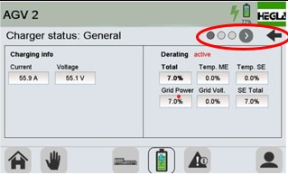
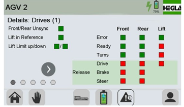
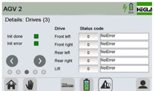

Operating the AGV
SBS-OP-121
Revised: 2024-02-13
Purpose/Application
Describes the procedures for using the operating screens for the AGV.
PPE Required
General
Bump cap/hard hat, safety glasses with foam liner, proper hearing protection, fire-resistant long-sleeved shirt, safety toe boots.
Additional Equipment
Respirator or PAPR in case of a toxic batch material spill.
Safety Hazards
Respirable Crystalline Silica
Crystalline silica has been classified as a human lung carcinogen. Breathing crystalline silica dust can cause silicosis, which in severe cases can be disabling, or even fatal.

Safety Controls
- Do not ride on the AGV or step onto it.
- LO/TO the power before performing work. Follow plant procedures.
- The Hazard Communication Standard (HCS) requires chemicals to have Safety Data Sheets (SDS). Use the SDS for chemicals listed in this SOP for additional hazards, first aid measures, toxicological information, accidental release measures, and handling/storage of the chemical.
- Review the Emergency Action Plan before performing work.
Equipment Needed
- Access to the SCADA SBS operating system.
- Fire extinguisher in the cage.
Comments
Before starting work:
- Read this document thoroughly.
- Complete the required training.
- Wear the required PPE.
This SOP uses Streator screens and images.
Related Resources
- SBS-ET-121 Troubleshooting the AGV
- SBS-MR-121 AGV General Maintenance
- SBS-MR-122 Changing the Oil in the AGV Gear Unit
Safety Around the AGV
-
Turn the AGV off if a safety or operational issue occurs. Open the door to the fenced area to break the circuit.
Note:
The AGV has an E-Stop button on the left side, with an indicator light.

Navigating the Operating Screens
-
The control screen and the main power switch are located on the AGV.
Note:
Use this power switch to turn the AGV on or off.
- This switch must always be in the "O" position during maintenance work.
- Follow plant lockout-tagout procedures.
Note:If any E-Stop in the SBS system is pressed, the AGV and the rest of the system will stop.
Note:The operator can use the SBS screens to stop operation, in which case the AGV completes its current order before stopping.

-
Use the buttons on the bottom of the screen to navigate between the various operating screens. From left to right, the buttons are:
- Back to Main Screen/Menu
- Manual Operation
- Carriage Details
- Battery
- Information Details
- Maintenance
- User

Description of the Operating Screens
-
Click the Battery button on the bottom of the screen to
display the main Battery menu, which shows the charge level and the status of
the battery.
- Click the upper right arrow on the right side of the screen to display the Battery Status menu, shown to the right.
- Click the lower right arrow to display the Charger Status General menu.
- Click the left arrow to return to the main Battery menu.


-
There are three Charger Status screens. Navigate between these screens using the gray arrow next to the buttons.
- The General screen displays general charging information.
- The Error/Warnings screen displays the status of any warnings.
- The Electronics screen provides additional data.
- Click the left arrow to return to the main Battery menu.



-
There are five Information Details screens. Navigate between these screens using the gray arrows next to the buttons.
- The first three screens provide various operational data. See the three screens on the right.



-
The fourth Details screen provides information about the four laser scanners/sensors.

-
The fifth Details screen provides E-Stop information.

-
Click the Maintenance button on the bottom of the screen to
display the Main Maintenance screen.
- Navigate between the two screens using the gray arrows next to the buttons.
- The Drives Control screen provides the following information:
1 = Sets the lift position to zero
2 = Lifts and lowers the lift without limits
3 = Sets the steer angle to zero
4 = Graphical and numerical lift position


-
An oil change must be performed on the lifting spindle drives after 500 operating hours.
- If this value is exceeded, an oil symbol will appear in the top section of every menu/screen.

Approval
|
Person |
Role |
|---|---|
|
Michael Hu |
Process Development Squad Lead |
|
David Jepsen |
Melter Training Specialist |
|
Phillip Wilson |
EHS Continuous Improvement Manager |
Revision History
|
2024-02-13 |
Approved by Michael Hu, Process Development Squad Lead |
|
Original Issue |